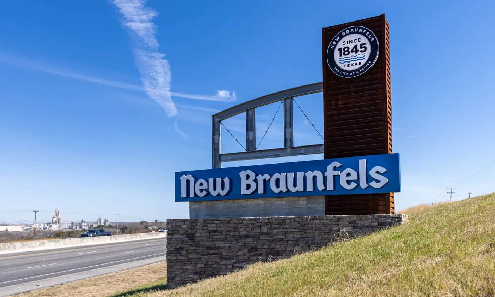

History
New Braunfels, founded in 1845 by German settlers, developed as an agricultural and trade hub. Over time, it diversified into manufacturing, tourism, and services, fueled by its proximity to San Antonio and Austin.
Population Growth
New Braunfels has experienced rapid population growth in recent years. In 2023, its population surpassed 100,000, driven by its proximity to Austin and San Antonio, along with strong economic development and a high quality of life.
Diversity
Calender
Incentives
The NBEDC and local entities offer grants, tax abatements, rebates, training funds, and other financial incentives to support businesses that create jobs and invest capital in New Braunfels, Texas.
